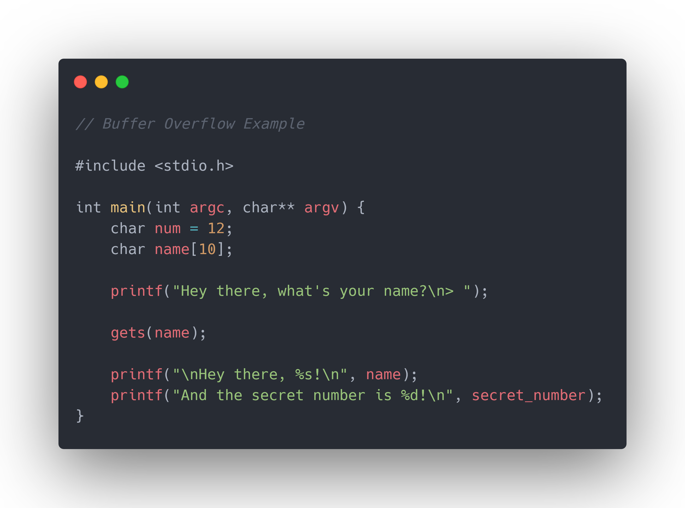
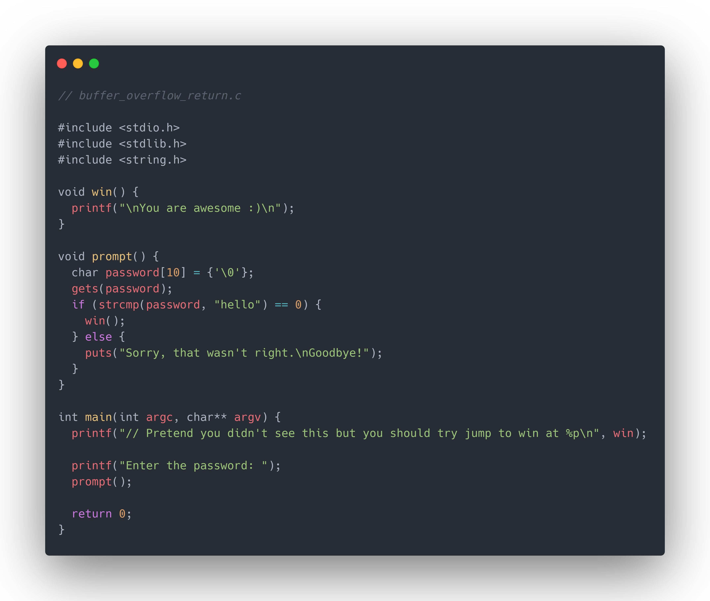

Buffer Overflows
Contents
Quick Links
Buffer Overflows
Buffer overflow attacks are caused by a code’s naive mishandling of user input. Just because you have a buffer of a said size, you cannot guarantee that the user will supply at most that size.
The function we’ll look at here is char *gets(char *s).
By the way, if you look at the man 3 gets page, it literally says “Never use gets()“
gets reads data from stdin and stores into the address given by its first parameter s. At the end of input it also writes the null terminating byte \00.
Overwriting variables

Here we have a basic program that asks the user for their name, and then greets the user and tells us a num. It stores the user’s name into the character array name (which has a size of 10).
If our name was Samuel, the program would run something like this…
1 2 3 4 5 6 7 |
$> ./buffer_overflow Hey there, what's your name? > Samuel Hey there, Samuel! And the secret number is 12! |
Cool, all is as expected.
If we take a look at the memory stored in the program
Memory
| Offset | 00 | 01 | 02 | 03 | 04 | 05 | 06 | 07 | 08 | 09 | 0A |
|---|---|---|---|---|---|---|---|---|---|---|---|
| Value | S | a | m | u | e | l | \x00 |
· | · | · | \x12 |
| Variable | name |
num |
What if we enter a 10 letter name, perhaps Jacqueline.
1 2 3 4 5 6 7 |
$> ./buffer_overflow Hey there, what's your name? > Jacqueline Hey there, Jacqueline! And the secret number is 0! |
Hmm that’s strange, why did our secret number become 0?
Memory
| Offset | 00 | 01 | 02 | 03 | 04 | 05 | 06 | 07 | 08 | 09 | 0A |
|---|---|---|---|---|---|---|---|---|---|---|---|
| Value | J | a | c | q | u | e | l | i | n | e | \x00 |
| Variable | name |
num |
Remember, gets writes a null terminating byte after it finishes reading the user input. That null terminating byte so happens to be written into the memory for num.
Don’t forget! If you want to store a 10 letter word, you need 10 + 1 = 11 bytes to store it!
In that sense, you can “overflow” your data into another variable to overwrite the values of other variables!
1 2 3 4 5 6 7 |
$> ./buffer_overflow Hey there, what's your name? > __________A Hey there, __________A! And the secret number is 65! |
Memory
| Offset | 00 | 01 | 02 | 03 | 04 | 05 | 06 | 07 | 08 | 09 | 0A |
|---|---|---|---|---|---|---|---|---|---|---|---|
| Value | _ | _ | _ | _ | _ | _ | _ | _ | _ | _ | A |
| Variable | name |
num |
The character A is equivalent to the ASCII code 65, which is why we see 65.
Also see Example 1
But that was boring!!! Show me something else!!!
No one:
Me: Alright fine you’ve convinced me.
Modifying return addresses
Having access to the memory in the stack means that not only can we change the function variables, we can also modify the return address of a certain stack frame.
In other words, we can make a function run another function (should we know the function address)

In the above program, when we enter the right password (in this case hello), the program will say “You are awesome!”.
If we don’t know the password, but we know the address of the win function, we could exploit the gets function to overwrite the return address in the stack frame.
1 2 3 4 5 6 7 8 |
$> echo -e "__________............\xc9\x61\x55\x56" | aslr ./buffer_overflow_return // Pretend you didn't see this but you should try jump to win at 0x565561c9 Enter the password: Sorry, that wasn't right. Goodbye! You are awesome :) Segmentation fault |
Note that we couldn’t just type this in directly because our memory address would be split into characters {\,x,c,9,\,x,6,1,\,x,5,5,\,x,5,6}
In this case we were given the value of the return address that we needed to use, although in reality we probably won’t have access to that (see example 3)!
Buffer overflows provide attackers a way to write arbitrary data. Whether it be a value, or an address to jump to another function, these vulnerabilities can be troubling and are worth fixing.